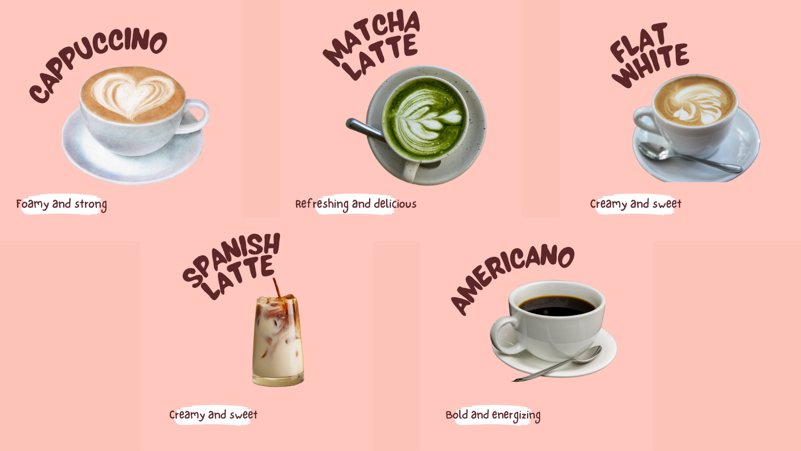

Established amidst the dynamic landscape of 2024, our cafe stands as a testament to passion and purpose. Our founding principle is simple yet profound: to offer students and all patrons an unparalleled culinary journey at prices that redefine affordability.
Driven by a commitment to excellence, we aspire to elevate your coffee experience to new heights. Our menu is meticulously crafted to delight your palate with a diverse selection of dishes and beverages, each crafted with care and precision.
From artisanal coffee blends to savory bites and sweet indulgences, every item reflects our dedication to quality and innovation. Step into our inviting space, where the aroma of freshly brewed coffee mingles with the warmth of community.
Whether you seek a quiet corner to study, a place to gather with friends, or simply a moment of solace, our cafe offers a haven where every visit promises a memorable experience. Join us in celebrating the joy of great coffee and good company,
as we invite you to savor the flavors of our passion-filled journey.
